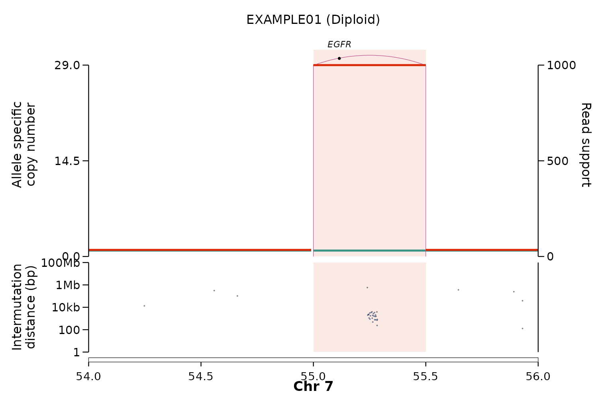

EpiTracer detects extrachromosomal circular DNA (ecDNA) amplicons that were most likely generated by a simple excision and re-circularisation event — an episome — and visualises the structural rearrangements underlying focal amplifications. This vignette runs the two core functions end-to-end on a small, self-contained example that ships with the package, so you can confirm your installation works in a few seconds before pointing EpiTracer at real data.
The example data
The package bundles one toy amplicon — a textbook episomal
EGFR ecDNA on chr7 in a fictional sample
"EXAMPLE01" — in the two input shapes the functions expect.
The data are synthetic (no patient data).
1. Calling episomal ecDNA
call_episomal_ecdna() inspects the structural-variant
breakpoints at each amplicon boundary and applies the episome
heuristic: a boundary duplication (DUP) carrying the highest
variant fraction, non-gained flanking segments (consistent with a circle
excised from a diploid region), and a candidate deletion “excision
scar”.
res <- call_episomal_ecdna(
ecdna_gr = ex_caller_inputs$ecdna_gr,
breakpoints_gr = ex_caller_inputs$breakpoints_gr,
cnv_gr = ex_caller_inputs$cnv_gr,
cancer_genes_gr = ex_caller_inputs$cancer_genes_gr
)
res[, c("event", "svclass", "VF", "duplication_at_boundary",
"episomal", "has_excision_scar")]
#> event svclass VF duplication_at_boundary episomal has_excision_scar
#> <char> <char> <num> <char> <char> <char>
#> 1: DEL1 DEL 200 FALSE TRUE TRUE
#> 2: DUP1 DUP 1000 TRUE TRUE TRUE
#> 3: DUP1 DUP 1000 TRUE TRUE TRUE
#> 4: DEL1 DEL 200 FALSE TRUE TRUEThe boundary duplications carry the highest VF in the amplicon, the
flanks are diploid, and a deletion scar is present — so every breakpoint
of this amplicon is classified episomal = "TRUE" with
has_excision_scar = "TRUE". An amplicon with the
same boundary DUP but gained flanks (i.e. not
excised from a diploid region) is instead returned as
episomal = "FALSE" — the discrimination the caller is built
for.
2. Visualising the amplicon
plot_sv_linear() draws allele-specific copy number, the
structural-variant arc, the karyotype ideogram and the gene label for a
locus. Here we focus on the EGFR amplicon on chr7.
(karyotype and gene_coord are omitted, so the
bundled hg38 references are used.)
p <- plot_sv_linear(
sample = "EXAMPLE01",
cnv_data = ex_plot_inputs$cnv_data,
sv_data = ex_plot_inputs$sv_data,
wgd_data = ex_plot_inputs$wgd_data,
chromosome = "chr7",
chromosome_range = matrix(c(54e6, 56e6), nrow = 1)
)
p
By default the plot is returned as a ggplot object and
nothing is written to disk. Pass outdir = "." to also save
a publication-ready PDF.
Kataegis in the SNV panel
Supplying snv_data adds a second panel of the sample’s
small mutations beneath the copy-number / SV panel, on the same genomic
x-axis. With the default snv_y = "imd" it is a rainfall
plot — each SNV sits at its intermutation distance to the previous
one — so kataegis (localised hypermutation) appears as
a tight cluster of points dropping toward the bottom of the panel.
The bundled ex_snv places an APOBEC-like kataegis shower
over the EGFR amplicon, with a few scattered background SNVs for
contrast:
plot_sv_linear(
sample = "EXAMPLE01",
cnv_data = ex_plot_inputs$cnv_data,
sv_data = ex_plot_inputs$sv_data,
wgd_data = ex_plot_inputs$wgd_data,
chromosome = "chr7",
chromosome_range = matrix(c(54e6, 56e6), nrow = 1),
snv_data = ex_snv # snv_y = "imd" (rainfall) by default
)
The kataegis cluster sits at ~100 bp–1 kb intermutation distance
inside the amplicon, well below the scattered background mutations.
snv_y = "vaf" or "cn" switch the panel to
variant-allele frequency or SNV copy number instead.
Using your own data
The example inputs mirror the columns EpiTracer expects from real pipelines:
-
call_episomal_ecdna()— ecDNA amplicon regions from AmpliconArchitect and allele-specific SV / copy-number calls from PURPLE (Hartwig Medical Foundation pipeline). See?call_episomal_ecdnafor the required metadata columns; other SV/CN callers can be coerced to the same shape. -
plot_sv_linear()— copy-number and SV tables keyed bysample; it can auto-detect amplified loci or take explicitloci. See?plot_sv_linear.
#> R version 4.6.1 (2026-06-24)
#> Platform: x86_64-pc-linux-gnu
#> Running under: Ubuntu 24.04.4 LTS
#>
#> Matrix products: default
#> BLAS: /usr/lib/x86_64-linux-gnu/openblas-pthread/libblas.so.3
#> LAPACK: /usr/lib/x86_64-linux-gnu/openblas-pthread/libopenblasp-r0.3.26.so; LAPACK version 3.12.0
#>
#> locale:
#> [1] LC_CTYPE=C.UTF-8 LC_NUMERIC=C LC_TIME=C.UTF-8
#> [4] LC_COLLATE=C.UTF-8 LC_MONETARY=C.UTF-8 LC_MESSAGES=C.UTF-8
#> [7] LC_PAPER=C.UTF-8 LC_NAME=C LC_ADDRESS=C
#> [10] LC_TELEPHONE=C LC_MEASUREMENT=C.UTF-8 LC_IDENTIFICATION=C
#>
#> time zone: UTC
#> tzcode source: system (glibc)
#>
#> attached base packages:
#> [1] stats graphics grDevices utils datasets methods base
#>
#> other attached packages:
#> [1] EpiTracer_0.0.1
#>
#> loaded via a namespace (and not attached):
#> [1] sass_0.4.10 generics_0.1.4 digest_0.6.39
#> [4] magrittr_2.0.5 evaluate_1.0.5 grid_4.6.1
#> [7] RColorBrewer_1.1-3 fastmap_1.2.0 jsonlite_2.0.0
#> [10] ggrepel_0.9.8 GenomeInfoDb_1.48.0 httr_1.4.8
#> [13] UCSC.utils_1.8.0 scales_1.4.0 textshaping_1.0.5
#> [16] jquerylib_0.1.4 cli_3.6.6 rlang_1.3.0
#> [19] withr_3.0.3 cachem_1.1.0 yaml_2.3.12
#> [22] otel_0.2.0 tools_4.6.1 parallel_4.6.1
#> [25] dplyr_1.2.1 ggplot2_4.0.3 BiocGenerics_0.58.1
#> [28] vctrs_0.7.3 R6_2.6.1 stats4_4.6.1
#> [31] lifecycle_1.0.5 Seqinfo_1.2.0 S4Vectors_0.50.1
#> [34] fs_2.1.0 IRanges_2.46.0 ragg_1.5.2
#> [37] pkgconfig_2.0.3 desc_1.4.3 pkgdown_2.2.1
#> [40] pillar_1.11.1 bslib_0.12.0 gtable_0.3.6
#> [43] Rcpp_1.1.2 glue_1.8.1 data.table_1.18.4
#> [46] systemfonts_1.3.2 xfun_0.60 tibble_3.3.1
#> [49] GenomicRanges_1.64.0 tidyselect_1.2.1 knitr_1.51
#> [52] farver_2.1.2 patchwork_1.3.2 htmltools_0.5.9
#> [55] labeling_0.4.3 rmarkdown_2.31 compiler_4.6.1
#> [58] S7_0.2.2